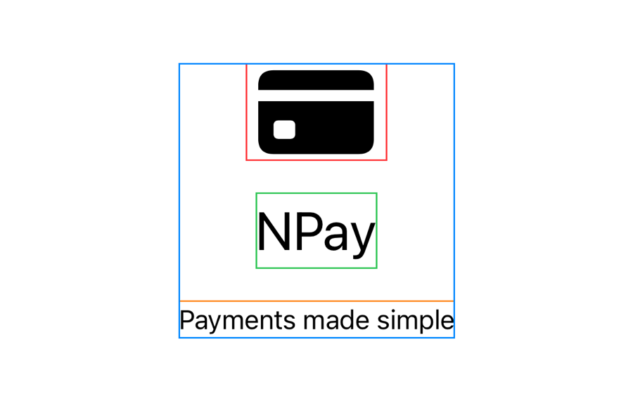

Part 1 · The problem (section 1)
NPay needs a vertical layout
VStack(spacing: 20) {
Image(systemName: "creditcard.fill")
Text("NPay")
}- Is
VStacka function? - Is the content a closure?
- How does a closure return two views?

Where 2.2 ended
Part 6 · Borders show the layout (sections 8, 18)
Spacing 20, then 50
VStack(spacing: 20) {
Image(systemName: "creditcard.fill")
.font(.system(size: 64))
.border(.red)
Text("NPay")
.font(.largeTitle)
.border(.green)
Text("Payments made simple")
.border(.orange)
}
.border(.blue)
.padding()
spacing: 20

spacing: 50
spacing 20: 207.7 × 207.3 pt
spacing 50: 207.7 × 267.3 pt
- Two gaps × 30 pt more
- The children didn’t change
Part 6 · spacing vs .padding() (sections 9, 19)
Padding on the stack, or on each child
VStack(spacing: 20) {
Text("NPay")
Text("Payments made simple")
}
.padding(30)
.background(.yellow)
A: 235.7 × 128.7 pt
VStack(spacing: 20) {
Text("NPay")
.padding(30)
Text("Payments made simple")
.padding(30)
}
.background(.yellow)
B: 235.7 × 188.7 pt
.padding()after}modifies the VStack, not the closure
Part 7 · Why VStack doesn’t fill the screen (section 11)
It hugs its children
VStack {
Text("NPay")
}
.border(.blue)VStack {
Text("NPay")
}
.frame(maxWidth: .infinity, maxHeight: .infinity)
.border(.blue)- Layout is proposal-driven
- Containers don’t fill their parent by default

39.7 × 24.3 pt

402.0 × 778.0 pt
Part 7 · Layout negotiation (section 16)
Stack height = children + spacing
VStack(spacing: 20) {
Text("NPay")
.font(.largeTitle)
Text("Payments made simple")
.font(.subheadline)
}Hstack ≈ H1 + H2 + S
The text’s illustration: 41 + 20 + 20 = 81 pt.

iPhone 17 simulator, iOS 26.5
title: 77.3 × 48.7 pt
subtitle: 158.0 × 21.0 pt
stack: 158.0 × 89.7 pt
48.7 + 21.0 + 20 = 89.7
Part 7 · When a child changes size (section 17)
Dynamic Type: measured again, placed again

Accessibility XL text size
title: 74.0 pt, subtitle: 49.7 pt
stack: 74.0 + 49.7 + 20 = 143.7 pt
- Same running app: only layout runs again
Part 8 · Final NPay code (sections 12, 20)
Milestone 2.3: a structured welcome screen
struct ContentView: View {
var body: some View {
VStack(alignment: .center, spacing: 20) {
Image(systemName: "creditcard.fill")
.font(.system(size: 64))
.foregroundStyle(.blue)
Text("NPay")
.font(.largeTitle)
.bold()
.foregroundStyle(.blue)
Text("Payments made simple")
.font(.subheadline)
.foregroundStyle(.secondary)
}
.padding()
}
}
Milestone 2.3
- Explicit alignment, spacing
- A subtitle
- Padding on the stack